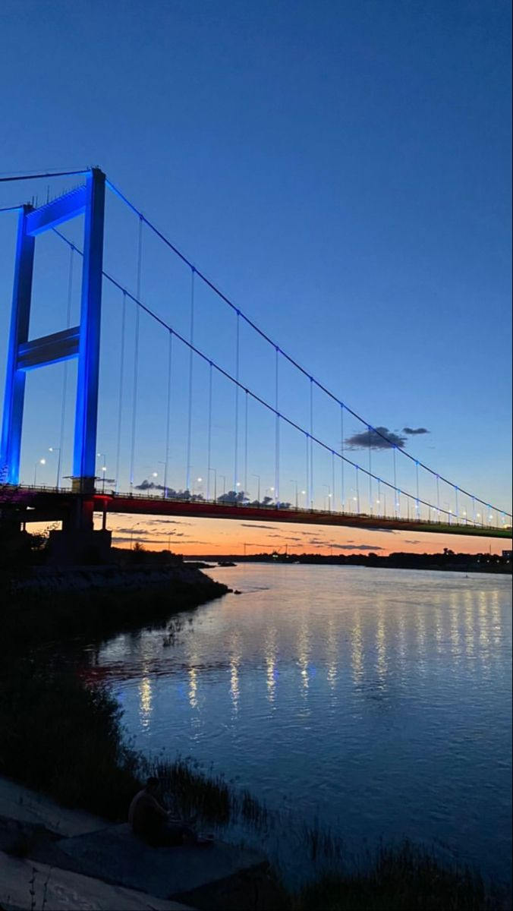
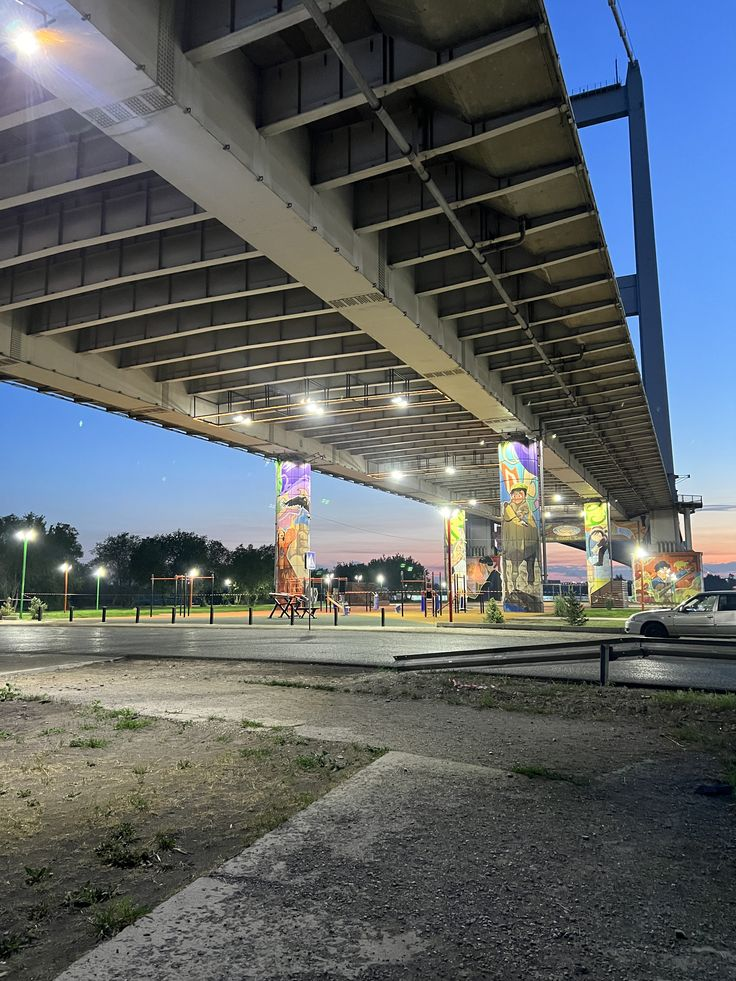
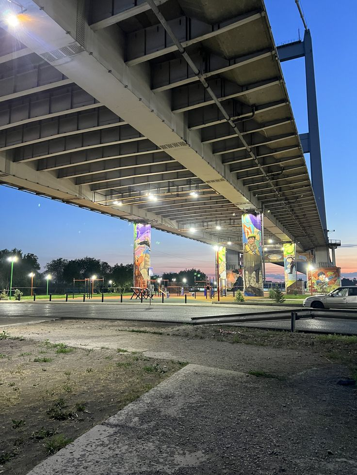

The Semey Suspension Bridge — one of the longest in Central Asia
This bridge is a symbol of Semey city. Opened in 2000, it was the largest suspension bridge in the region at that time.
- Length: 1086 meters
- Width: 27 meters
- Type: Suspension
- Crosses: Irtysh River
Why visit?
- 🌉 Impressive architecture
- 📷 Beautiful views of the city and river
- 🚶♂️ Pedestrian walkway for scenic walks
How to get there?
📍 Semey, Kabanbai Batyr Avenue
🚗 Accessible by car, public transport or on foot
Fun fact
🔧 The bridge was constructed with the assistance of Japanese engineers and is a significant engineering achievement of Kazakhstan.
The Semey Suspension Bridge is not just a transport link, but a place offering the best panoramic views of the city and Irtysh River.
PHOTOS

 
